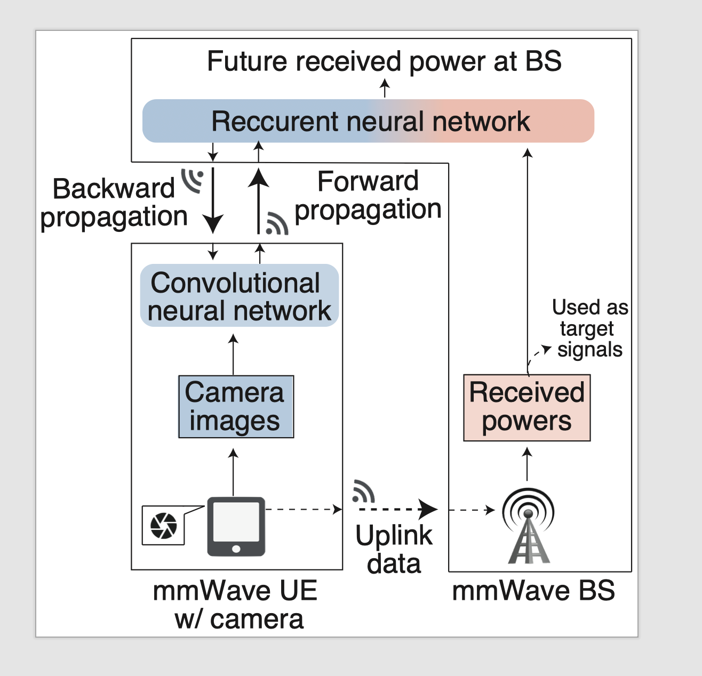

Communication-efficient multimodal split learning for mmWave received power prediction

The goal of this study is to improve the accuracy of millimeter wave received power prediction by utilizing camera images and radio frequency (RF) signals, while gathering image inputs in a communication-efficient and privacy-preserving manner.
To this end, we proposed a distributed multimodal machine learning (ML) framework, coined multimodal split learning (MultSL), in which a large neural network (NN) is split into two wirelessly connected segments. The upper segment combines images and received powers for future received power prediction, whereas the lower segment extracts features from camera images and compresses its output to reduce communication costs and privacy leakage. Experimental evaluation corroborated that MultSL achieves higher accuracy than the baselines utilizing either images or RF signals. Remarkably, without compromising accuracy, compressing the lower segment output by 16x yields 16x lower communication latency and 2.8% less privacy leakage compared to the case without compression.
Publications
Y. Koda, J. Park, M. Bennis, K. Yamamoto, T. Nishio, M. Morikura, and K. Nakashima,
“Communication-efficient multimodal split learning for mmWave received power prediction,” IEEE
Communications Letters, vol. 24, no. 6, pp. 1284-1288, Jun. 2020.
(IEEE Xplore,
;
Arxiv preprint:
)